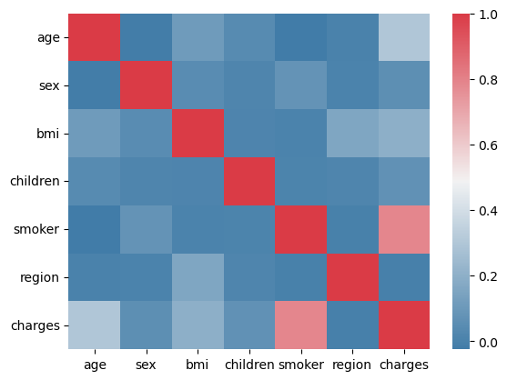
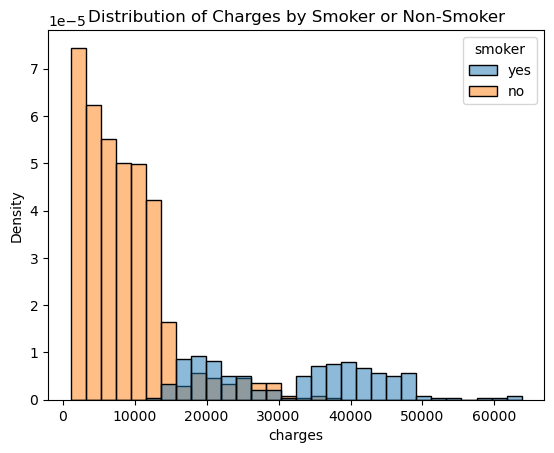
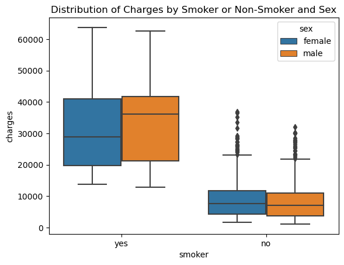
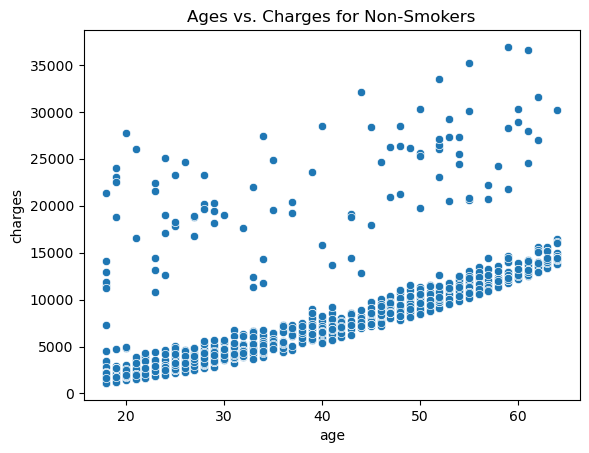
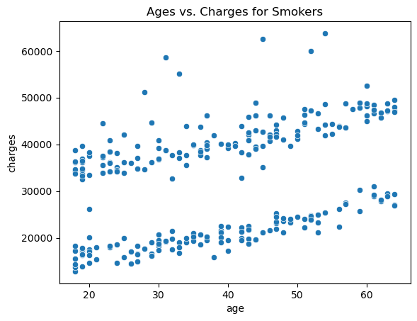
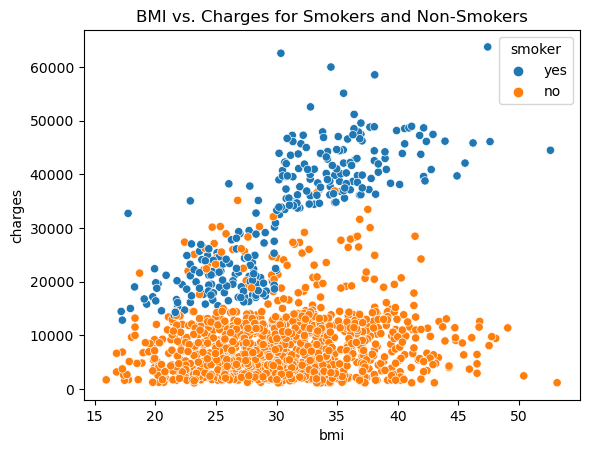

Data Exploration and Analysis#
import pandas as pd
import numpy as np
import matplotlib.pyplot as plt
import seaborn as sns
from instools import utils
ins = pd.read_csv("data/insurance.csv")
ins
| age | sex | bmi | children | smoker | region | charges | |
|---|---|---|---|---|---|---|---|
| 0 | 19 | female | 27.900 | 0 | yes | southwest | 16884.92400 |
| 1 | 18 | male | 33.770 | 1 | no | southeast | 1725.55230 |
| 2 | 28 | male | 33.000 | 3 | no | southeast | 4449.46200 |
| 3 | 33 | male | 22.705 | 0 | no | northwest | 21984.47061 |
| 4 | 32 | male | 28.880 | 0 | no | northwest | 3866.85520 |
| ... | ... | ... | ... | ... | ... | ... | ... |
| 1333 | 50 | male | 30.970 | 3 | no | northwest | 10600.54830 |
| 1334 | 18 | female | 31.920 | 0 | no | northeast | 2205.98080 |
| 1335 | 18 | female | 36.850 | 0 | no | southeast | 1629.83350 |
| 1336 | 21 | female | 25.800 | 0 | no | southwest | 2007.94500 |
| 1337 | 61 | female | 29.070 | 0 | yes | northwest | 29141.36030 |
1338 rows × 7 columns
ins_enc = utils.label_encoder(ins, ['sex', 'smoker', 'region'])
ins_enc
#sex: 0 = female, 1 = male
# smoker or not: 0 = no, 1 = yes
#region: 0 = northeast, 1 = northwest, 2 = southeast, 3 = southwest
| age | sex | bmi | children | smoker | region | charges | |
|---|---|---|---|---|---|---|---|
| 0 | 19 | 0 | 27.900 | 0 | 1 | 3 | 16884.92400 |
| 1 | 18 | 1 | 33.770 | 1 | 0 | 2 | 1725.55230 |
| 2 | 28 | 1 | 33.000 | 3 | 0 | 2 | 4449.46200 |
| 3 | 33 | 1 | 22.705 | 0 | 0 | 1 | 21984.47061 |
| 4 | 32 | 1 | 28.880 | 0 | 0 | 1 | 3866.85520 |
| ... | ... | ... | ... | ... | ... | ... | ... |
| 1333 | 50 | 1 | 30.970 | 3 | 0 | 1 | 10600.54830 |
| 1334 | 18 | 0 | 31.920 | 0 | 0 | 0 | 2205.98080 |
| 1335 | 18 | 0 | 36.850 | 0 | 0 | 2 | 1629.83350 |
| 1336 | 21 | 0 | 25.800 | 0 | 0 | 3 | 2007.94500 |
| 1337 | 61 | 0 | 29.070 | 0 | 1 | 1 | 29141.36030 |
1338 rows × 7 columns
sns.heatmap(ins_enc.corr(), cmap=sns.diverging_palette(240,10,as_cmap=True));
plt.savefig('figures/heatmap.png');

Here, we see that smoker is very highly correlated with charges. It’s followed slightly by bmi and age.
sns.histplot(data=ins, x='charges', hue='smoker', stat='density')
plt.title('Distribution of Charges by Smoker or Non-Smoker');
plt.savefig('figures/charges_by_smoker.png');

Here, we see that smokers tend to be charged way more than non smokers.
sns.boxplot(data=ins, y='charges', x='smoker', hue='sex');
plt.title('Distribution of Charges by Smoker or Non-Smoker and Sex');
plt.savefig('figures/charges_by_smoker_sex.png');

Here, we see that among male smokers, the charges are a lot higher than female smokers. On the other hand, male and female non-smokers are charged roughly the same, but females just slightly more.
sns.scatterplot(data=ins[ins['smoker'] == 'no'], x='age', y='charges')
plt.title('Ages vs. Charges for Non-Smokers');
plt.savefig('figures/nonsmoker_age.png');

sns.scatterplot(data=ins[ins['smoker'] == 'yes'], x='age', y='charges')
plt.title('Ages vs. Charges for Smokers');
plt.savefig('figures/smoker_age.png');

For non-smokers, it looks like the charges increase with age. However, for smokers, it looks like there isn’t as strong of a trend.
sns.scatterplot(data=ins, x='bmi', y='charges', hue='smoker')
plt.title('BMI vs. Charges for Smokers and Non-Smokers');
plt.savefig('figures/bmi.png');

It looks like there’s a trend of smokers with a high BMI being charged more than non-smokers.